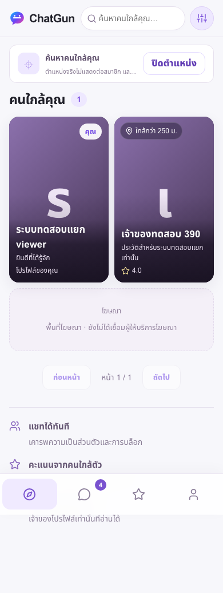
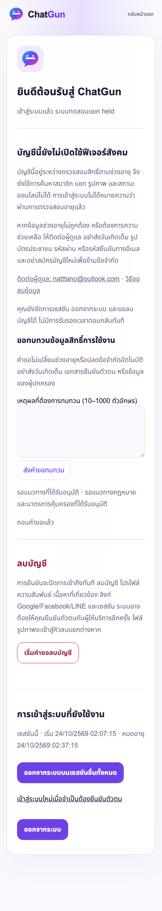
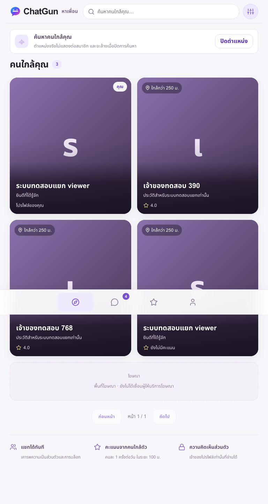
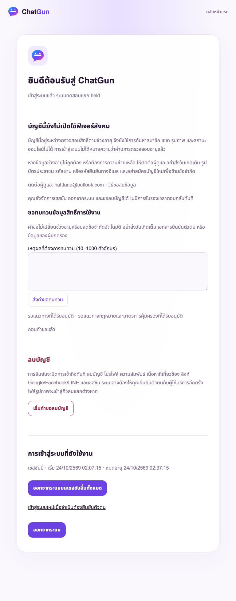
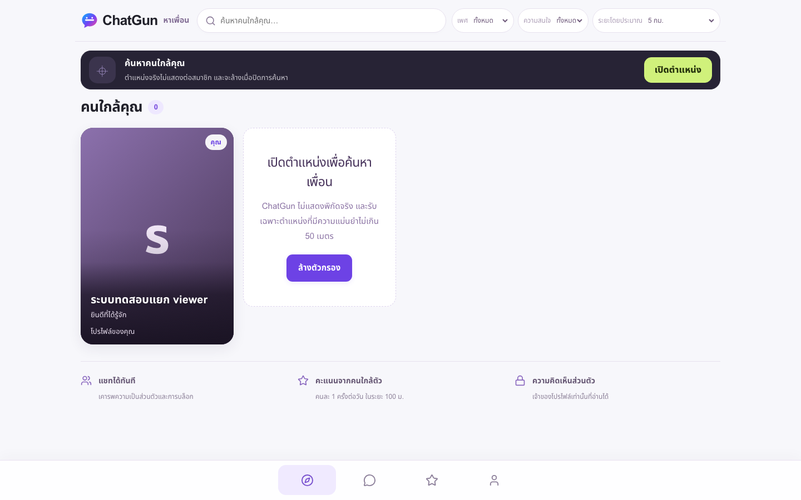
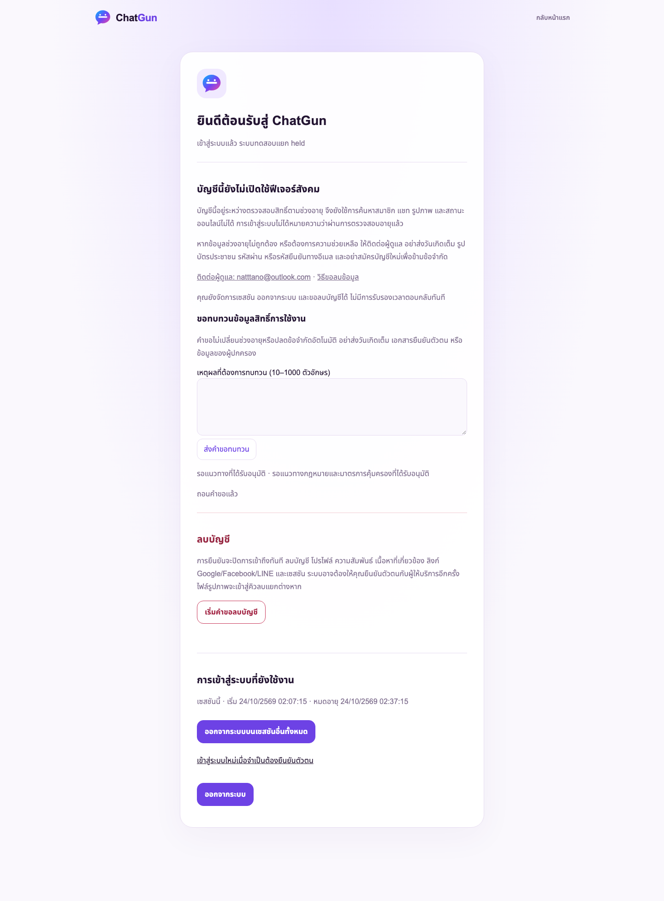

24 ตุลาคม 2026 · PR17 · ไม่มี Production deployment/migration ในงานนี้
DEVELOPMENT COMPLETE — READY FOR ONE FINAL E2E/UAT
Engineering gate ไม่ใช่ public/youth/Social activation และไม่อ้าง fixture sessions เป็น genuine OAuth
Application 4a7dee32c52bc474ee3cc50d13e293e66e771c1a
isolated stable Preview · schema21 · private R2 chatgun-issue13-media · Preview OAuth/registration ปิดไว้
Production a73ff21c615dabb6a0c19c0a22685c2370958ca1 · schema17 · owner pilot เดิม ผู้ใช้1/LINE identity1 ข้อความและสื่อ0
CI application candidate 40008332912: COMPLETED SUCCESS. Baseline CI40000585614 ยืนยัน SUCCESS แล้วเช่นกัน Final evidence-only HEAD/CI อยู่ใน PR comment ปิดงาน
ไม่ได้ทำ genuine OAuth/Admin MFA ซ้ำ ไม่รบกวนเจ้าของให้ล็อกอินระหว่างพัฒนา ไม่อ้าง viewport เป็น physical-device certification และไม่อ้างตรวจทุก orphan นอก manifest
ฉบับเต็ม · NEAR v91 read-only source98bb83e; Game/Friend approval/Demo ถูกถอดตามคำอนุมัติ ไม่ออกแบบ UI ใหม่
| Feature | Frontend / route | Backend | Storage | Authorization | Functionality / status | Actual automated evidence | Defect / activation prerequisite |
|---|---|---|---|---|---|---|---|
| LINE, Google, Facebook login | `signup.js`, `/signup` | A OAuth start/callback; `_lib/oauth.js` | identities, oauth_flows, sessions | provider allowlist, Turnstile hostname/action, state/nonce, PKCE where supported, token verification | COMPLETE; TECHNICALLY COMPLETE — ACTIVATION GATED | `auth.test.js`, `line-readiness.test.js`, `auth.spec.js` | No new genuine-provider success claimed. Keep LINE-only owner pilot; Google/Meta publishing and final authorized human campaign required |
| Invitation / duplicate prevention | signup fragment handoff | A invitation binding + atomic identity creation | beta_invitations/enrollments, provider+subject unique identity | hashed single-use invitation, OAuth transaction binding | COMPLETE; activation gated | `beta-admission.test.js`, `beta-preparation.test.js` | No invitations issued; no public registration |
| Session persistence/logout/revocation | `account.js`, session controls | A me/logout/sessions | sessions, session_auth_evidence | HttpOnly cookie, CSRF, recent auth for revoke-others | COMPLETE | `auth.test.js`, `privacy-safety.test.js`, `online-presence.test.js`, full-system browser | Genuine owner session untouched |
| Account linking / isolation | account provider controls | A OAuth linking | identities, oauth linking session | exact authenticated user, CSRF, existing-identity ownership; holds denied | COMPLETE | `auth.test.js`, `youth-safety.test.js` | Separate consenting identity required only for final genuine UAT |
| Acceptance / returning-member routing | `acceptance.html/js`, signup/account | A acceptance, `_lib/acceptance.js` | versioned account_acceptances, account_state | server pending→acceptance→onboarding→active; same-version not repeated | COMPLETE; activation gated | `acceptance.test.js`, `acceptance-ui.test.js`, browser acceptance tests | Wider-release policy/age model not inferred from pilot approval |
| Onboarding / edit fields | member form in UI | S onboarding/member, profile | member_profiles, age_assurance_events | own session, eligible cohort, safe text limits | COMPLETE; activation gated | `social.test.js`, `acceptance.test.js`, full-system browser | Names/gender/bio/interests persist; no legal age verification claim |
| Profile hierarchy / portrait | `near-components.js`, UI profile route | S profile, gallery select | selected_photo_id + manually released media | own/visible/unblocked eligible profile; approved image only | COMPLETE; activation gated | `source-components.test.js`, `phase2-visual-restoration.test.js`, full-system browser | NEAR structure/tokens preserved; new screenshots are fixture evidence, not new pixel-perfect certification |
| Privacy / location consent | profile/settings controls | S profile/privacy, discovery location/hide | visibility, DM prefs, coordinates + located_at | owner-only writes, hide removes location/presence, age write guards | COMPLETE; activation gated | `social.test.js`, `online-presence.test.js`, `youth-safety.test.js` | Coarse bands reduce but do not eliminate proximity inference; operator scope approval required |
| Discovery / filters / pagination | root discovery, own-card-first, two mobile columns | S discovery + cursor/filter logic | eligible member_profiles, blocks, released portraits | own profile + visible eligible cohort only, no precise coordinate response | COMPLETE; activation gated | `development-completion.test.js`, `social-ui.test.js`, responsive/browser discovery tests | No fake fallback members; real public discovery remains off |
| Direct Chat / inbox / history | UI chat, deep links | S conversations/messages | messages, chat preferences, initiation counters | user/block/privacy/cohort/anti-spam, no friendship approval | COMPLETE; activation gated | `direct-chat-albums.test.js`, `development-completion.test.js`, full-system browser | Messaging remains off in Production |
| Send/retry/read/unread/unsend | composer, inbox badges, thread | S messages send/read/unsend | client_request_id unique, read_at/unsent_at | sender-only unsend, safe target, rate limits, idempotent retry | COMPLETE; activation gated | durable-delivery, retry, unread and thread tests | Browser failure recovery preserves drafts and does not fabricate success |
| Image chat / reuse / five-item library | UI attachment picker | S messages/image, chat-assets, chat-media | private R2, media + message references | underlying gallery authorization retained on forwarding; manual release required | COMPLETE; activation gated | `social-media.test.js`, `development-completion.test.js`, full-system browser | No new real uploads enabled |
| Online badge / opt-in | `online-presence.js`, cards/profile/inbox/header | S online | per-session/tab leases, privacy preferences | real foreground heartbeat, TTL90s, blocked/hidden/held deny, safe booleans | COMPLETE; activation gated | `online-presence.test.js`, `social.spec.js` | Default privacy OFF; never derive from location/login history |
| Public Gallery / upload page / caption | G routes/viewer/upload form | S gallery/media | D1 photos, private R2 | own upload, eligible/unblocked viewers, approved-general only | COMPLETE; activation gated | `gallery-approved.test.js`, `social-media.test.js`, local/Cloud full-system browser | Uploads stay off in Production |
| Private Album icon / request / approval / rejection / revoke | approved image+lock badge, persistent Chat cards | S albums/access, messages | requests, grants, chat_system_events | owner decisions, CAS revision, every media/gallery/comment read rechecks permission | COMPLETE; activation gated | `direct-chat-albums.test.js`, `private-album-icons.test.js`, full-system browser | No client-only grants; revocation denies new bytes and clears refreshed viewers |
| Photo likes/comments/report/delete/portrait | G full-screen viewer/action controls | S gallery actions, reports/media | likes/comments, photo refs, media deletion queue | authenticated eligibility, blocking in both directions, owner deletion | COMPLETE; activation gated | gallery, permissions, comment-draft, media/report tests | Normal user quota/capacity rules preserved |
| Image validation / metadata stripping | client optimizer + private fetch | `_lib/image.js`, S upload | sanitized R2 bytes, metadata | signature/MIME/size validation, server sanitizer, no public bucket | COMPLETE; activation gated | `image.test.js`, `social-media.test.js`, Cloud media reads | Vendor scanning not implemented or claimed; manual quarantine remains mandatory |
| Upload quotas / capacity | remaining counters + disabled exhausted category | S upload-quotas + gallery/chat reservation | atomic daily attempts/idempotency, combined capacity12 | independent chat10/gallery10 Bangkok day; failure releases; deletion/rejection no refund | COMPLETE; activation gated | `social-media.test.js`, `gallery-approved.test.js`, quota browser tests | No privileged public quota-bypass endpoint |
| Quarantine / manual media decisions | moderation media queues | S moderation/media | safety reviews, revisions, decisions, private R2 | safety_admin, purpose, recent auth, CSRF; sensitive remains denied | COMPLETE; activation gated | `media-moderation.test.js`, `moderation.test.js`, full-system browser | Staffed process/scanner selection separate; no automatic approval |
| Ratings / private reviews / 100m eligibility | member rating modal, reviews | S ratings | proximity_ratings, fresh location | actual distance100m server check, daily limit, blocked/ineligible deny | COMPLETE; activation gated | `social.test.js`, `development-completion.test.js`, full-system browser | No arbitrary client proximity assertion |
| Blocking / report categories / urgent cases | profile/report UI, blocked management | S blocks/reports | blocks, reports + reason_code | self/target validation, rate limits, both block directions, held accounts denied Social | COMPLETE; activation gated | `social.test.js`, `account-moderation.test.js`, full-system browser | NCII/threat/child-safety priorities route to owner; no fictitious emergency staffing |
| Report decisions / participant notices | moderation queues + notification list | S moderation/reports + notifications | CAS nonce/revision, audit, account_safety_notifications | authorized reviewer; notify reporter only, never identify reporter to subject | COMPLETE; activation gated | new exactly-once recipient/read-authorization test in `development-completion.test.js` | Fixed missing report outcome notification; report audit reason remains mandatory |
| Appeals / restricted accounts | `appeals.js`, account rights | S media/appeals, account-appeals, moderation/accounts | appeals/restrictions/events | independent media reviewer; conflict acknowledgement where approved account path allows; no automatic release | COMPLETE; activation gated | `account-moderation.test.js`, `media-moderation.test.js`, cross-review tests | No independently staffed appeals reviewer confirmed |
| Admin overview / coverage / urgent workload / cleanup alerts | `moderation.html/js` | S overview/capabilities | aggregate counts, cleanup attempts | routine fixed audit purpose, role-gated; exceptional evidence retains purpose | COMPLETE; activation gated | `moderation.spec.js`, `moderation.test.js`, full-system browser | Coverage19–22 Bangkok daily; no backup/24×7 or invented SLA |
| Member / deletion-request queues | new Admin tabs, member ID search | S moderation/members | minimized SELECT + administration_access_events | safety_admin, recent auth, recorded purpose; read-only | COMPLETE; activation gated | `eligibility-review.test.js`, full-system 3-width browser | Fixed missing queues. No email/DOB/coordinates/tokens or Admin deletion bypass returned |
| Role assignment/revocation UI | new restricted Admin role tab | S moderation/roles | expiring grants + role events | moderation_admin only, no self-grant; exact target/reason/expiry/CSRF/fresh auth | COMPLETE; activation gated | `moderation.test.js`, new 3-width real-handler grant/revoke UI | No real grants made; owner role expiry must not be extended silently |
| Cloudflare-only Admin technical adapter | separate `/api/admin/*`, moderation session | Access signature/issuer/audience, own CSRF/session | cloudflare_admin_sessions | exact approved owner mapping plus separately granted roles; no email-header trust; iat not fresh auth | COMPLETE; activation gated | `cloudflare-admin-access.test.js`, `moderation.spec.js` | Access application/policy and genuine MFA/auth_time evidence remain external configuration/UAT gates. Fixed logout of expired internal sessions |
| Account deletion / retries / R2 cleanup | account confirmations and reauth | A deletion request/confirm; cleanup Worker | transaction/cascades, queue claims, minimal receipt | recent auth10min, CSRF, owner token one-use, revoke sessions/access | COMPLETE; activation gated | `privacy-safety.test.js`, `media-cleanup.test.js`, local/Cloud deletion browser | No real owner deletion; Time Travel/backups not claimed instant erasure |
| Retention / cleanup reconciliation | Admin cleanup status | `_lib/retention.js`, Worker, scoped validation scripts | expiry indexes, deletion claims/retry queue | bounded batches; exact synthetic manifests; preserve unrelated rows | COMPLETE; activation gated | privacy/media cleanup tests + Cloud scoped cleanup/integrity | New closed reviews/access/notifications90-day technical cleanup; pending review retained until resolution/deletion. Production scheduler activation remains separate |
| Youth account holds / alternative write guards | Thai account notice/rights | central eligibility + schema19/20 triggers | minimal age bands/holds; no DOB | under13/13–17/18–19 deny Social/contact/link/presence; no false adult checkbox escape | COMPLETE; activation gated | `youth-safety.test.js`, 11-case actual Cloud suite | Passing protection does not authorize youth signup |
| Correction / withdrawal / eligibility review | new account form/history, Admin review queue | A eligibility-review; S moderation/eligibility | schema21 requests/events/audit | own account, recent auth, CSRF, rate limit, one-pending uniqueness/CAS; no self-review or unlock action | COMPLETE; activation gated | `eligibility-review.test.js`, 3-width real-handler browser, actual Cloud duplicate/withdrawal race | Fixed missing engineering workflow. Only uphold/defer; withdrawal does not clear hold. No identity-document collection |
| Youth admission / capacity / parental authorization | preparatory draft only | no admission endpoint enabled | no child/parent identity dataset created | fail closed until approved model | EXTERNALLY BLOCKED | rejection/bypass evidence, youth requirements draft | Qualified Thai legal/operator decisions for capacity, lawful basis, parental authority, withdrawal and safeguarding; not an implemented live admission feature |
| Responsive navigation / empty/offline/error/retry / accessibility | NEAR-derived shell, auth/account/Admin/Gallery | real config + recoverable errors | no fictional IndexedDB initialization; export/retirement preserved | authenticated routes; errors never grant data | COMPLETE | 93 UI tests + 10 real-handler browser cases at390/768/1440 | Mobile viewport tests are not physical-device certification; final genuine UAT deferred |
| Legal pages / community/retention/minor policy expansion | approved owner-pilot pages + unpublished drafts | build-release policy gate | versioned legal acceptance | no publication of broader drafts by this task | EXTERNALLY BLOCKED for broader launch | legal route/version and scope tests | Existing pilot approval does not cover public/youth/social rollout; no new legal compliance claim |
| Scanning vendor / backup moderator / emergency SLA | documented workflow only | no vendor enabled | no third-party image transfer | explicit owner approval required | EXTERNALLY BLOCKED | runbooks and fail-closed media tests | No approved scanner, backup or independent reviewer assumed |
| Release / Production rollout | no Production release in this task | scoped Preview deploy + release guards | Production schema17 untouched; Preview21 | separate exact scope approval + backup/recovery/CI gates | EXTERNALLY BLOCKED pending final genuine UAT and approvals | live SHA/API/private R2/binding checks, CI | Public registration/Discovery/Chat/Presence/uploads/Sensitive remain OFF |
เจ้าของคนเดียว19:00–22:00 Bangkok ทุกวัน ไม่มี backup/24×7/independent reviewer ที่ยืนยันแล้ว ไม่มีการเพิ่ม scanner vendor. สิทธิ์ Admin เดิมหมดอายุ27ต.ค.2026 11:01:45 Bangkok ไม่ต่ออายุเอง
Production/Protected Staging เดิมตรวจ read-only ไม่ reset/reseed/delete owner-review batch ไม่แก้ NEAR/PiggyPrice. ข้อมูลทดสอบใหม่อยู่ isolated environment มี private0700/0600 backups. Closed reviews/access audits/notifications cleanup90วันเป็น technical window ที่ทดสอบ ไม่ใช่นโยบายเผยแพร่ใหม่; pending reviews คงอยู่จนพิจารณาหรือลบบัญชี. Account deletion ลบ request/events cascade; D1 Time Travel/R2 backups ไม่หายทันที






แผน UAT รอบเดียว / entry gates / rollback · ผล JSON · live asset/API checks · boundaries · cleanup
NO-GO สำหรับ expanded Production activation จนกว่าจะผ่าน genuine UAT และ owner-approved scope. Public registration/Discovery/Chat/Presence/uploads/Sensitive/OTP/Demo ของ Production ยังคงปิด